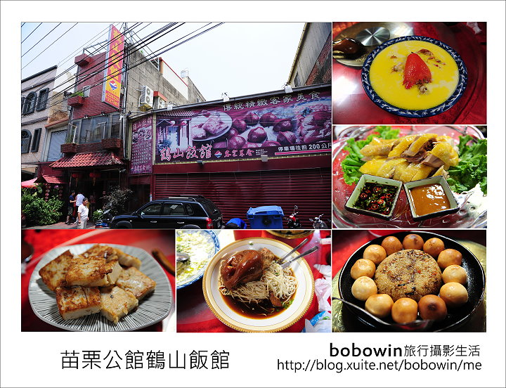
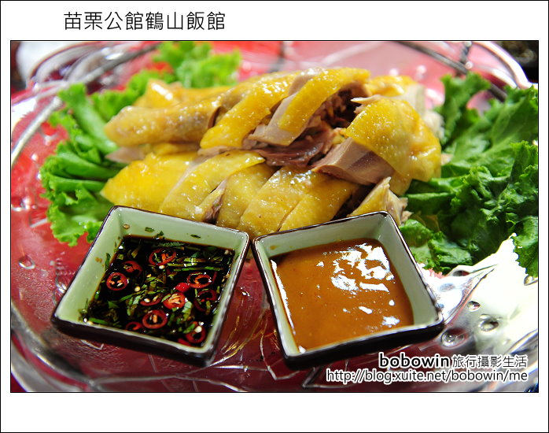

拍攝地點: 苗栗公館鶴山飯館
公館鶴山飯館地址: 苗栗縣公館鄉鶴山村7鄰233號
公館鶴山飯館GPS座標: E 120°49'54" ( 120.8316) N 24°31'54" ( 24.5317)
公館鶴山飯館營業時間: AM11:00-1PM4:00；PM17:00-PM21:00
公館鶴山飯館訂位電話: (037)220-226 或 (037) 227-881
公館鶴山飯館交通路線: 高速公路下公館交流道右轉，往苗栗方向開約100公尺後，
右邊有一個百成加油站前紅綠燈右轉直行，經過高速公路小函洞後，
再往前開約500公尺的十字路口右轉。(有專屬停車場)
前言:
寶寶溫又來推薦客家美食了，這次要介紹的是在公館地區赫赫有名的鶴山飯館，
之前訂了一次結果客滿，一氣之下，這次提早了幾個月訂，總不會訂不到吧!
建議訂它的桌菜，人多現場單點上菜很慢，訂桌菜也比較划算，
跟著寶寶溫(bobowin)一起去苗栗找道地美食
下中山高苗栗公館交流道後，轉入苗26鄉道，沿途不少客家的傳統建築，
在這小小的鄉道內藏了不少美食，今日要拜訪的鶴山飯館便是其中的代表佼佼者，
有20多年歷史的餐館，保存著老祖母留下來的道地客家味道，現在是第二代哥哥在經營，
連福寶媽父母這道地客家人都說好吃，直說比弟弟所開陳師傅餐館好吃多了。
中午抵達時店內早已是滿滿的人潮，沒想到在這小鄉道內，
還有這樣大氣度的餐廳，人多熱鬧的氣氛，很適合吃這種桌菜料理
手拉坏餐具也是特色之一，牆上滿滿的古早東西，
都是老闆的收藏， 也能看出早期客家人生活點滴
我們訂了4000元的桌菜，吃的超級飽的，以這樣的菜色在台北至少6000~8000起跳。
另外要提的是上菜速度真的非常快，第一道旭蟹蒸蛋我們上桌後，
倒完飲料就送到了，之後的菜更是不囉嗦的一直推出。旭蟹蒸蛋蒸蛋非常嫩，蟹肉也很鮮甜
豬肚四神湯，這是一定要吃的客家菜，店家一定會附上一把剪刀，這就是吃豬肚湯的竅門所在
答案揭曉，剪刀就是要來分解豬肚，讓豬肚更方便食用
開胃菜醃蘿蔔乾，一直忘了它的存在，有古早的味道，非常下飯
新米加舊米混合，加入蘿蔔師絲、客家蔥酥及蝦米製成的客家蘿蔔糕，
煎的焦酥，吃起來口感及味道都很棒
白斬土雞肉，肉質有彈性，且一定要配上客家桔醬一起吃，甜甘又清香


蹄膀筍干，選200斤重以上的豬，滷好後蒸上一天一夜，
豬蹄膀皮Q彈富含膠質，吃起來也不油膩，麵條不是用一般的麵線，有拉麵般的嚼勁，寶寶溫推薦這道菜
吃到這來一杯店家特製的熱紫蘇梅茶，溫潤又順口，
可以無限量供應。裝紫蘇梅茶的手拉坯茶壺，也很有古早味
竹筍福菜湯，這也是必吃的客家菜，福菜跟竹筍一脆一軟的口感，就是絕配，湯內還有清蒸的豬腳塊，
讓湯頭喝起來多了一分甜味
客家肥腸，滷透的大腸頭跟筍子搭配，這組合挺新鮮的，
味道上沒話說，都有滷到入味
梅汁糖醋魚，兩種酸甜醬汁交織出不同的酸甘滋味，
算是創意料理，新鮮魚肉的甜味不會完全被醬汁所掩蓋
香酥奶黃包+客家米糕，早期客家鄉親多從事農業活動，
客家米糕加入香菇丁、碎肉丁、蝦仁乾等配料，
就變成吃的飽又可補充體力的好料理，香酥奶黃包一口一個，外脆內軟口感佳
今日的青炒時蔬是冬瓜， 本來是中段就要送的菜，忘記了才最後出，剛好吃青菜去油膩
每一桌老闆都會招待最後一道地瓜，地瓜很甜，品種應該是有挑過的
老闆會一直在店內穿梭，看到奇裝異服的就是他了
小福寶這次也有跟到喔，下面有圖為證 (又再搞怪了)
鶴山飯館的人氣高漲，要吃合照料理，一定要先訂桌，散客也有接，點菜前也可詢問看有沒有適合
連古時農作的水車都搬來，可見老闆對舊事的追求
4000元的桌菜，10個人吃超級飽的，店內的收藏很多會讓人會心一笑，
如果要吃道地客家菜，可以考慮鶴山飯館
後記:
為了避免大家說每次都被照片騙(文中文字其實都有點到)，
寶寶溫決定導入星星評鑑制度，滿分五顆星，
三顆以下表示不滿意，三顆表示尚可，三顆以上表示推薦。以下是鶴山飯館的評鑑結果
服務態度 ★ ★ ★ ☆ ☆
環境氣氛 ★ ★ ★ ★ ☆
交通便利 ★ ★ ★ ☆ ☆
食物美味 ★ ★ ★ ★ ☆
消費價格 ★ ★ ★ ★ ☆
再次造訪 ★ ★ ★ ★ ☆
總結: 因為客人多，要求服務會稍慢，交通位在苗栗公館鄉道上，
大眾交通工具無法到達，食物好吃份量多，價格也便宜，
如果到苗栗一帶，寶寶溫會考慮再訪的
引用文章:bobowin旅行攝影生活